silent luxury
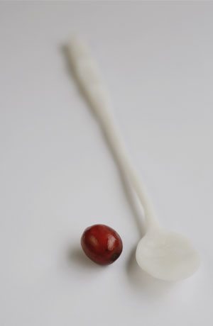
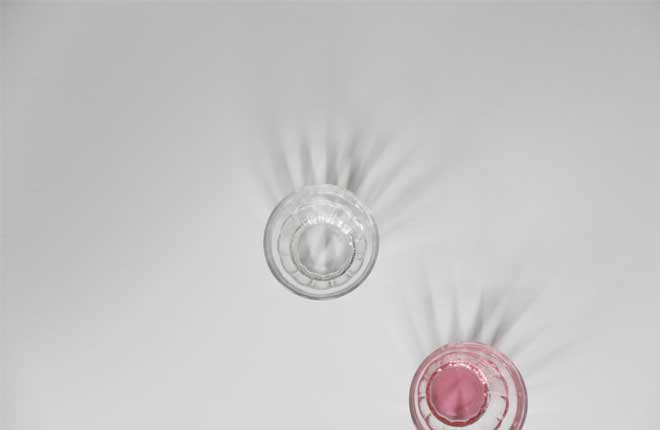
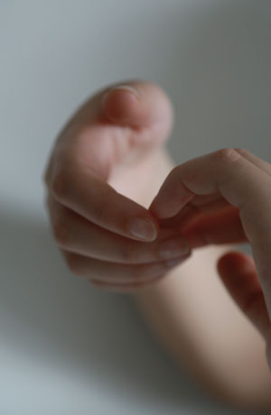
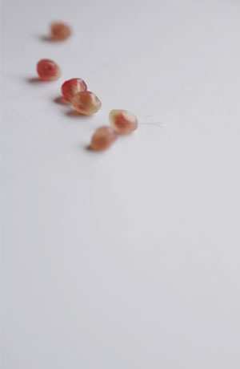
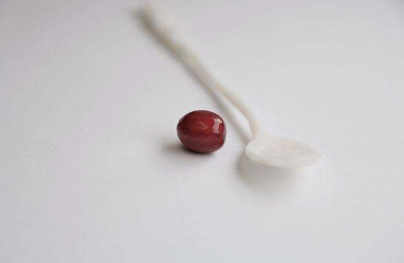
 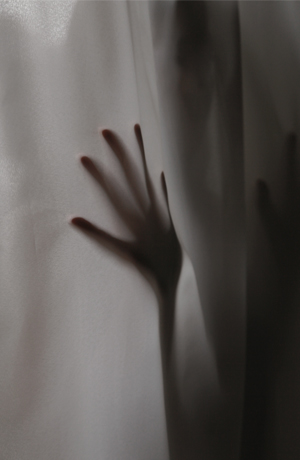
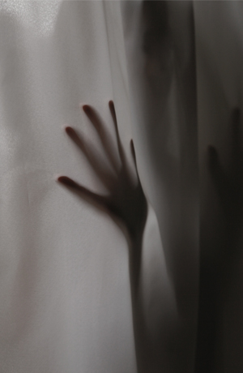
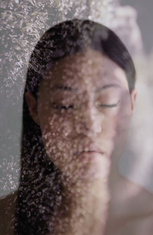
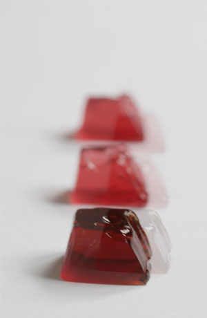
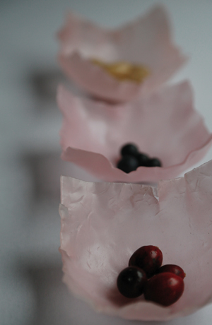
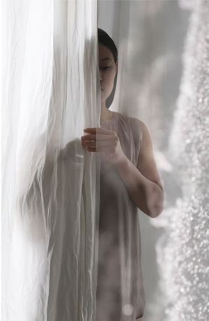
Silent luxery Eye film hotel
De zoektocht naar comfort wordt bevorderd door vertraging en het weghalen van prikkels. De verstilling, traditie, verfijning en respect activeren zintuigen.
Ze worden mooier, zachter en intenser. Versimpeling van vormen, ver- vaging van kleur en zachte lichtinval zijn de basis. Controle, kleinschalig en met aandacht is het gevoel.
Opdrachtgever: Eye
Categorie: Stills, product, in opdracht Concept
styling: Willemien van den Broek
Fotografie:Ester Tak
Model: Sarah van der Pol
© 2014 willemien van den broek